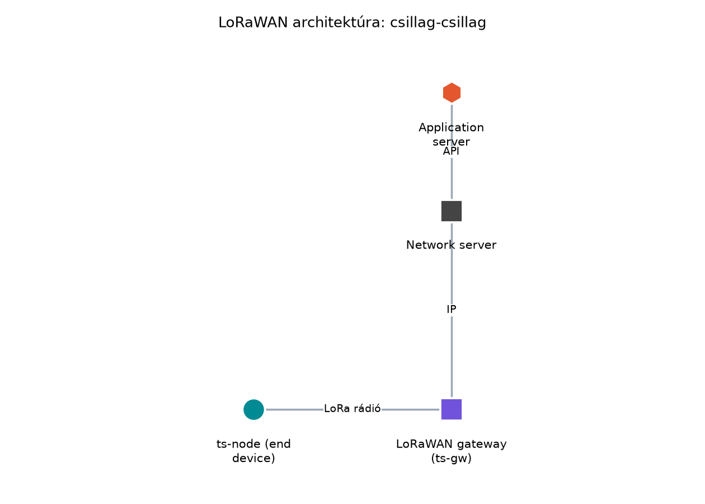

A TerraSense alapértelmezett laborarchitektúrájában a
ts-node szenzorcsomópont UDP-n küldi a mérési adatokat a
ts-gw gatewaynek, amely aztán MQTT-n továbbítja a backend
felé. Ez a modell akkor működik jól, ha a csomópont és a gateway között
van megbízható helyi hálózat, például egy üvegházon belüli Wi‑Fi vagy
vezetékes Ethernet.
Más a helyzet, ha a monitorozott üvegház egy távoli, infrastruktúra nélküli területen van, vagy ha egyetlen gatewaynek több, egymástól több száz méterre lévő csomópontot kellene kiszolgálnia. Ilyenkor a rövid hatótávú rádiók (BLE, Wi‑Fi) nem elegendők, a cellás kapcsolat pedig túl drága és energiaéhes lenne egy elemes szenzorhoz. A LoRaWAN ezt a rést tölti be: kilométeres hatótávot ad alacsony adatsebességgel és nagyon kis energiafogyasztással, cserébe szigorú adásgyakorisági korlátokkal. Ebben az alfejezetben megismerjük a LoRaWAN architektúráját, eszközosztályait, aktiválási módjait, és kiszámítjuk, milyen gyakran küldhet egy eszköz a duty cycle szabályok betartásával.
Definíció. A LoRaWAN (Long Range Wide Area Network) egy LPWAN (Low Power Wide Area Network) hálózati protokoll, amely a LoRa modulációt használja. A hálózat négy fő elemből áll:
ts-node.A LoRaWAN rádiós oldala csillag topológiájú: minden end device közvetlenül egy vagy több gatewayhez küld, az eszközök egymással nem kommunikálnak. A gatewayek IP-hálózaton (Ethernet, Wi‑Fi, cellás) csatlakoznak a network serverhez, ami egy második, hálózati csillagot alkot. Ezt a kétszintű felépítést nevezzük csillag-csillag topológiának.

Az ábra azt mutatja, hogy a ts-node LoRa rádión küld a
ts-gw-nek, amely IP-n továbbít a network servernek, onnan
pedig az application serverhez jut az adat. A gateway nem értelmezi az
alkalmazás adatait, csak továbbítja a rádiókereteket; a titkosítás és az
üzenetfeldolgozás a network serverben történik.
Definíció. A LoRaWAN három eszközosztályt határoz meg, amelyek abban különböznek, hogy az eszköz mikor tud downlink üzenetet fogadni:
A TerraSense elemes szenzorcsomópontja számára a Class A a természetes választás, mert a mérési ciklus (10 perc az Energiamodell és az elemélettartam kiszámítása alapján) ritkán igényel azonnali parancsot. A szelep vezérléséhez elegendő, ha a parancs a következő uplink utáni RX1 ablakban érkezik; a késleltetés legfeljebb egy periódus.
Definíció. A LoRaWAN kétféle aktiválási módot kínál:
NwkSKey, AppSKey) és a
DevAddr azonosítóban. Az OTAA lehetővé teszi a kulcsok
rotációját és a biztonságos újracsatlakozást.DevAddr és a munkamenetkulcsok előre be vannak égetve az
eszközbe, így nincs join eljárás; az eszköz azonnal küldhet. Cserébe a
kulcsok statikusak, és a frame counter elvesztése biztonsági kockázatot
jelent.A TerraSense esetében az OTAA javasolt, mert a hálózati szerverrel való időszakos újracsatlakozás lehetővé teszi a kulcsfrissítést és a biztonságos flottakezelést. Az ABP csak olyan zárt, felügyelt környezetben elfogadható, ahol a frame counter perzisztens tárolása garantált.
Definíció. A LoRa modulációban a spreading factor (SF) határozza meg, hogy egy adatbit hány chirp-et használ. Nagyobb SF nagyobb érzékenységet és hatótávot ad, de kisebb adatsebességet és hosszabb rádióidőt (time on air) eredményez. A duty cycle (adáskihasználtság) azt a szabályozási korlátot jelenti, amely megadja, hogy egy adott frekvenciasávban az eszköz az idő mekkora hányadában adhat.
A LoRaWAN régiós szabályozásai – például az EU868 sávban az ETSI előírásai – jellemzően 1% vagy annál kisebb duty cycle-t írnak elő egyes alcsatornákra. Ez az érték ellenőrzési igényt hordoz: a pontos számok a régiótól és a szabályozás aktuális verziójától függenek. A következő számításban ezért illusztratív értéket használunk.
A rádióidő közelítőleg arányos a payload méretével és a spreading factorral. Pontos képlete a LoRa moduláció paramétereiből származtatható, itt csak a duty cycle számítás logikáját mutatjuk be. Ha egy eszköz rádióideje , és az adott csatornára megengedett duty cycle , akkor a minimális periódus:
Ebből a maximális üzenetgyakoriság:
A gyakorlatban az eszköz több csatornát is használhat, így a tényleges korlát enyhébb lehet, de a tervezéshez a legszigorúbb alcsatornára kell méretezni.
A LoRaWAN akkor a legjobb választás, ha:
Nem jó választás, ha:
A Rádiós technológiák összevetése
alfejezetben részletesen összehasonlítottuk a LoRaWAN-t a BLE, Wi‑Fi és
cellás megoldásokkal. A TerraSense alapértelmezett laborhálózatában a
rövid hatótávú BLE/UDP megoldást használjuk, de a LoRaWAN-t alternatív
uplinkként tartjuk nyilván azokra a telephelyekre, ahol a
ts-gw nem telepíthető a csomópont közelébe.
Továbbvitt eredmény. A LoRaWAN mint alternatív
uplink döntését a TerraSense-ben a következőképpen rögzítjük: ha egy
telephelyen nincs helyi ts-gw, a ts-node
LoRaWAN Class A végberendezésként, OTAA aktiválással csatlakozik egy
hálózati szerverhez. Az adat az application serveren keresztül
MQTT-topicra kerül, és onnan a meglévő ts-backend ingest
útvonalat használja. Ezt a lehetőséget a gateway
szerepe: híd, puffer, biztonsági határ és a záróprojekt: a teljes TerraSense rendszer összeállítása
és átvétele alfejezetek használják fel.
Az alábbi táblázat összefoglalja a LoRaWAN osztályok és aktiválási módok közötti választást.
| Szempont | Class A | Class B | Class C | OTAA | ABP |
|---|---|---|---|---|---|
| Downlink késleltetés | Uplink utáni ablak (nagy) | Ütemezett rések (közepes) | Azonnali (kicsi) | Első csatlakozáskor join szükséges | Nincs join, azonnal küldhet |
| Energiafogyasztás | Legalacsonyabb | Közepes | Magas | Join alatt kicsit több | Nincs join többlet |
| Tipikus alkalmazás | Elemes szenzor | Elemes eszköz, időzített parancsok | Hálózati táplálású aktuátor | Biztonságos, skálázható flotta | Zárt, egyszerű hálózat |
| Biztonság | Jó | Jó | Jó | Kulcsrotáció lehetséges | Statikus kulcsok, frame counter kockázat |
Tegyük fel, hogy a TerraSense egyik távoli üvegházában a
ts-node LoRaWAN Class A eszközként működik az EU868 sávban.
Az eszköz SF7 spreading faktort használ 125 kHz sávszélességgel, a
payload mérete 10 bájt. A rádióidő ezzel a beállítással körülbelül
ms (illusztratív érték, a pontos szám a LoRa moduláció fejléc- és
CRC-paramétereitől függ). A régiós szabályozás az adott alcsatornára
(1%) duty cycle-t ír elő (ellenőrizendő az aktuális ETSI
szabályozásban).
A minimális periódus:
A maximális üzenetgyakoriság:
Ez azt jelenti, hogy az eszköz elméletileg legfeljebb 5 másodpercenként küldhet egy uplinket az adott csatornán. A TerraSense 10 perces mérési ciklusa ( s) ennél két nagyságrenddel ritkább, tehát a duty cycle korlát nem szűk keresztmetszet ebben az alkalmazásban.
Fontos megjegyezni, hogy a duty cycle a csatornára vonatkozik, nem az eszközre. A LoRaWAN eszközök gyakran több csatornát használnak véletlenszerű frekvenciaugrással, így a tényleges korlát enyhébb lehet. A fenti számítás a legrosszabb esetet mutatja, amikor az eszköz mindig ugyanazt az alcsatornát foglalja le. A tervezés során a legszigorúbb korlátot kell alapul venni, hogy a hálózati szerver ne utasítsa el a frame-eket túlzott adáskihasználtság miatt.
A LoRaWAN eszközök duty cycle betartását a network server naplózza: minden frame-hez tartozik egy időbélyeg és a rádióidő. A The Things Stack vagy más LoRaWAN hálózati szerver konzolján ellenőrizhető, hogy az eszköz adásai megfelelnek-e a régiós szabályoknak. A gatewayek is jelentik a vett jel erősségét (RSSI) és a jel-zaj viszonyt (SNR), ami a hatótáv és a spreading factor beállításának ellenőrzésére használható.
| Hibatünet | Lehetséges ok | Javítás |
|---|---|---|
| A hálózati szerver nem fogadja a frame-eket | Túl gyakori adás, duty cycle túllépés | Növeljük a periódust, vagy váltsunk alacsonyabb SF-re, ha a hatótáv engedi |
| Az eszköz nem csatlakozik OTAA-val | Hibás AppKey vagy JoinEUI | Ellenőrizzük a regisztrált eszközazonosítókat és kulcsokat a network serverben |
| ABP eszköz újraindítás után nem működik | A frame counter nem lett perzisztensen mentve | Tároljuk a frame countert nem felejtő memóriában, vagy váltsunk OTAA-ra |
| Nagy SF mellett is rossz a hatótáv | Antenna probléma, árnyékolás, rossz gateway-pozíció | Ellenőrizzük az antennát, helyezzük magasabbra a gatewayt |
ABP használata frame counter mentése nélkül. Ha az eszköz újraindul és a frame counter lenullázódik, a network server ismétlésnek vagy visszajátszásnak érzékeli a frame-eket, és elutasítja azokat. A frame countert nem felejtő memóriában kell tárolni, vagy egyszerűbb OTAA-t használni, ahol a join új kulcsokat generál.
Class A eszköznél azonnali downlink elvárása. Sok fejlesztő azt feltételezi, hogy a parancs azonnal eljut az eszközhöz, mint egy TCP-kapcsolatnál. A Class A eszköz csak az uplink utáni rövid RX1/RX2 ablakban hallgat, ezért a parancs kézbesítése legfeljebb egy periódus késleltetést szenved. Ha azonnali vezérlés kell, Class C vagy más technológia szükséges.
A duty cycle figyelmen kívül hagyása. A LoRaWAN sávok szigorú szabályozás alatt állnak; a túlzott adáskihasználtság a hálózati szerver frame-eldobásához vezet, és akár jogi következményei is lehetnek. A gyakori adatküldés igénye esetén növelni kell a periódust, vagy más technológiát kell választani.
A spreading factor növelése mindig javítja a rendszert. Bár a nagyobb SF nagyobb hatótávot ad, a rádióidő is nő, ami növeli az energiafogyasztást és csökkenti a hálózati kapacitást. A cél a lehető legkisebb SF, amely még megbízható kapcsolatot ad.
Magyarázza el, miért nevezzük a LoRaWAN-t csillag-csillag topológiájúnak, és mi a különbség a network server és az application server szerepe között.
Egy LoRaWAN eszköz az EU868 sávban SF7, 125 kHz beállítással 20 bájt payloadot küld. A rádióidő körülbelül ms (illusztratív). A duty cycle korlát . Számítsa ki a minimális periódust és a maximális üzenetgyakoriságot egyetlen csatornára.
A TerraSense távoli üvegházában a ts-node LoRaWAN-t
használ, és a szelepet is vezérelnie kell. Válasszon eszközosztályt
(Class A/B/C) és aktiválási módot (OTAA/ABP), és indokolja a döntést.
Térjen ki arra, hogyan jut el a szelepnyitási parancs az eszközhöz.
Egy ABP-vel aktivált LoRaWAN eszköz működik, de áramszünet után újraindul, és ezután a hálózati szerver nem fogadja az uplinkjeit. Mi lehet az ok, és hogyan javítható?
A csillag-csillag topológia azt jelenti, hogy az end device-ok rádiós
csillagban kapcsolódnak a gatewayekhez (minden eszköz közvetlenül a
gatewayhez, nem egymáshoz), a gatewayek pedig IP-hálózaton egy másik
csillagban a network serverhez. A network server a
LoRaWAN hálózati rétegét kezeli: munkamenetek, titkosítás,
duplikátumszűrés, adaptív adatsebesség, downlink-ütemezés. Az
application server az alkalmazásréteg felé nyújt
interfészt: dekódolja az eszköz payloadjait, továbbítja az
alkalmazásnak, és fogadja az alkalmazás parancsait. A kettő közötti
határ biztonsági és skálázhatósági szempontból fontos: a hálózati
szolgáltató nem látja az alkalmazás adatait, mert azok az
AppSKey kulccsal külön vannak titkosítva.
A minimális periódus:
A maximális üzenetgyakoriság:
Tehát az eszköz legalább 8 másodpercenként küldhet az adott csatornán, azaz legfeljebb 0,125 üzenetet másodpercenként.
A ts-node elemes szenzorcsomópont, ezért az
energiafogyasztás kritikus. A szelep vezérlése nem igényel azonnali,
másodpercnél pontosabb reakciót, ezért a Class A
osztály elegendő: a parancs a következő uplink (legfeljebb 10 perccel
később) utáni RX1 ablakban érkezik. Aktiválási módként
OTAA-t választunk, mert lehetővé teszi a kulcsok
rotációját, és a hálózati szerver oldalán egyszerűbb a flotta kezelése.
Ha később mégis gyorsabb downlink kellene, át lehet térni Class B-re az
ütemezett ping résekkel, de az energiafogyasztás növekedésével számolni
kell.
Az ok nagy valószínűséggel az, hogy a frame counter
(FCntUp) nem lett perzisztensen tárolva, és az újraindulás
után az eszköz nulláról kezdi a sorszámozást. A network server ezt
visszajátszásnak vagy duplikátumnak érzékeli, és elutasítja a
frame-eket. A javítás: a frame countert nem felejtő memóriában (például
flashben) kell tárolni, és újraindulás után onnan kell folytatni. Hosszú
távon jobb megoldás az OTAA-ra való áttérés, mert a join eljárás új
kulcsokat és friss frame countereket generál.
A LoRaWAN egy LPWAN protokoll, amely csillag-csillag topológiában
nagy hatótávot és alacsony energiafogyasztást biztosít. Az end device-ok
rádiós csillagban gatewayekhez kapcsolódnak, a gatewayek IP-n a network
serverhez, amely a hálózati réteget kezeli; az application server az
alkalmazás felé továbbítja az adatokat. A három eszközosztály (A, B, C)
a downlink-ablakok gyakoriságában tér el; a TerraSense elemes
csomópontjához a Class A illik. Az OTAA aktiválás biztonságosabb, mint
az ABP, mert lehetővé teszi a kulcsrotációt. A duty cycle szabályozási
korlátot ad az adásgyakoriságra:
.
A példában 50 ms rádióidő és 1% duty cycle mellett a minimális periódus
5 s, ami bőven lehetővé teszi a TerraSense 10 perces ciklusát.
Továbbvitt eredmény: a LoRaWAN-t a TerraSense-ben
alternatív uplinkként kezeljük: a ts-node Class A
eszközként OTAA-val csatlakozik, az adat MQTT-n át a
ts-backend-be jut; ezt a gateway
szerepe: híd, puffer, biztonsági határ és a záróprojekt: a teljes TerraSense rendszer összeállítása
és átvétele alfejezetek használják.
A LoRaWAN protokoll alapfogalmai stabil tudás; a hivatalos specifikációt a LoRa Alliance adja ki (LoRaWAN Specification). A rádióidő pontos számítása a LoRa moduláció paramétereitől függ, ezért a példában használt 50 ms-os érték illusztratív, és a kiválasztott SF, sávszélesség, payload méret és coding rate alapján kell ellenőrizni. A duty cycle régiós értékei – például az EU868 sávra vonatkozó 1% – az aktuális ETSI szabályozásból (EN 300 220 sorozat) ellenőrizendők; a pontos korlátok alcsatornánként és országonként eltérhetnek. A The Things Stack vagy más LoRaWAN hálózati szerver pontos naplózási és konfigurációs funkcióinak nevei szintén ellenőrzést igényelnek.